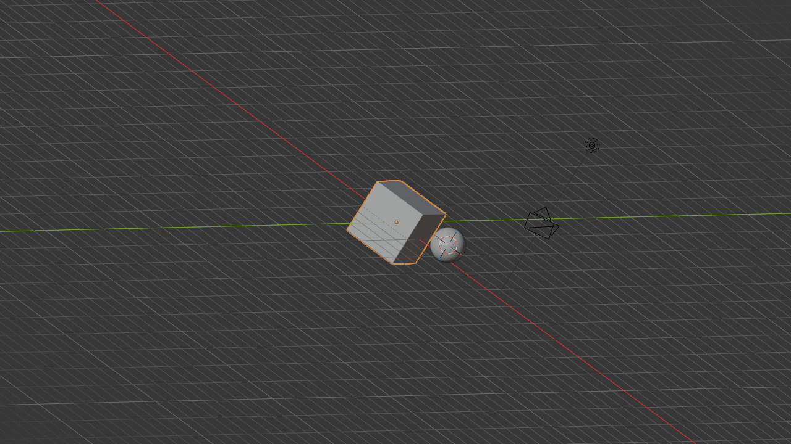
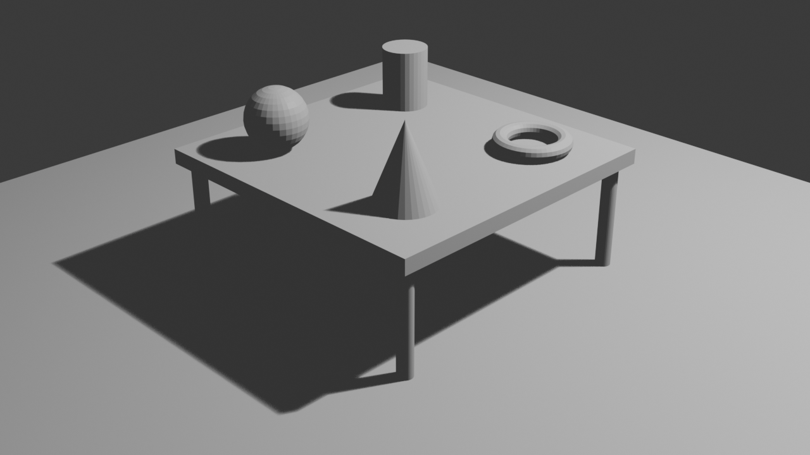

🎮 Basic Object Manipulation
You've learned to navigate through 3D space—now it's time to start actually creating! In this lesson, you'll learn the fundamental operations that every 3D artist uses dozens of times per session: selecting objects, moving them around, rotating them into position, and scaling them to the right size. These are the building blocks of all 3D work, and mastering them will make everything else in Blender feel natural and intuitive.
📚 What You'll Learn
- Selecting objects with precision and efficiency
- The three fundamental transformations: Move (Grab), Rotate, and Scale
- Using axis constraints for precise control
- Working with the 3D cursor and pivot points
- Duplicating objects and creating arrays
- Numeric input for exact transformations
- Snapping and precision tools
- Understanding object origin points and transforms
⏱️ Estimated Time: 75-90 minutes
🎯 Project: Build a simple scene using all transformation tools
📑 In This Lesson
🎯 Selection: Choosing What to Manipulate
Before you can move, rotate, or scale anything, you need to select it. Selection in Blender is fundamental—it tells Blender "work on THIS object, not the others." Let's master the various ways to select objects.
Basic Selection Methods
Think of selection like pointing at something and saying "I want to work with this." In Blender, selected objects get highlighted with an orange outline, making it clear what you're working on.
🖱️ Primary Selection Methods
| Action | Method |
| Select Single Object | Left Click on the object |
| Add to Selection | Shift + Left Click |
| Box Select | B then drag, or Press and drag with left mouse |
| Circle Select | C then move mouse, left-click to select, middle-click to deselect |
| Select All | A |
| Deselect All | Alt + A or A twice |
| Invert Selection | Ctrl + I |
| Select in Outliner | Click object name in Outliner |
✅ Try It Now: Basic Selection
- Start with Blender's default scene (cube, camera, light)
- Click on the cube—it gets an orange outline (selected)
- Click on the camera—cube deselects, camera selected
- Click on the cube again to select it
- Hold
Shiftand click the light—both cube and light selected! - Hold
Shiftand click the camera—all three selected - Press
Ato select all—everything highlights - Press
Alt + Ato deselect all—all outlines disappear
Understanding Selection States
Blender uses color to show selection states:
- Orange outline: Selected and active (most recent selection)
- Light orange/yellow outline: Selected but not active
- No outline: Not selected
- Dark outline: Hidden or disabled in viewport
The "active" object is the last one you selected—it's the one whose properties show in the Properties panel. When multiple objects are selected, the active object is slightly brighter orange.
💡 Active Object Matters
Many operations use the active object as a reference. For example, when joining objects, they merge into the active object. When copying properties, they copy from the active object. Always be aware which object is active (brightest orange)!
Box Select: Selecting Multiple Objects
Box select lets you drag a rectangular selection box around objects—perfect for selecting multiple objects quickly.
📦 Box Select Tool
Method 1: Press B then press and drag
Method 2: press and drag with left mouse button (in Blender 4.0+)
Usage:
- Your cursor becomes a crosshair
- press and drag to create a selection rectangle
- Everything inside the box gets selected
- Release to confirm
- Middle-click or
Escto cancel
✅ Try It Now: Box Select
- Add some objects to practice: Press
Shift + A→ Mesh → UV Sphere - Add another:
Shift + A→ Mesh → Cone - Press
Alt + Ato deselect all - Press
Bto activate box select - press and drag a box around the cube and sphere
- Both objects become selected!
- Try selecting all objects with one big box
Circle Select: Brush-Style Selection
Circle select gives you a circular "brush" for selecting—great for selecting specific objects in crowded scenes.
⭕ Circle Select Tool
Press C to activate circle select
Controls:
- Move mouse: Position the circle
- Scroll wheel: Adjust circle size
- Left click: Select objects under circle
- Middle click: Deselect objects under circle
- Right click or Esc: Exit circle select
Circle select is particularly useful when you need to "paint" selection over objects, or when working with dense geometry where box select would catch too many objects.
Selection Through the Outliner
Sometimes the cleanest way to select objects is through the Outliner, especially in complex scenes where objects overlap visually.
📋 Outliner Selection
- Left click: Select single object
- Shift + Click: Add to selection
- press and drag: Select multiple items in list
- Ctrl + Click: Select hierarchies (object and children)
Selected objects in the Outliner highlight and appear selected in the viewport—perfect synchronization!
Advanced Selection Techniques
🎯 More Selection Tools
Lasso Select: Press Ctrl + Left press and Drag to draw a freeform selection shape
Select Linked: Press L with mouse over object to select all connected geometry
Select Similar: Select one object, press Shift + G to select all similar objects (by type, color, etc.)
Select Random: Select → Select Random (in header menu) for random object selection
⚠️ Can't Select Objects?
If clicking objects doesn't select them, check these common issues:
- Outliner visibility: Object might be hidden (eye icon in Outliner)
- Selection disabled: Arrow icon in Outliner might be disabled
- Wrong mode: You might be in Edit Mode—press
Tabto return to Object Mode - Local view: Object might not be in your current local view—press
Numpad /to exit
Professional Tip: Efficient selection is the mark of an experienced artist. Rather than always clicking individual objects, professionals fluidly switch between box select for groups, direct clicking for specific items, and Outliner selection for complex hierarchies. Develop comfort with all selection methods—each has its place!
📍 Move (Grab): Positioning Objects
Now that you can select objects, let's move them around! The Move operation (also called "Grab" in Blender) is one of the three fundamental transformations you'll use constantly.
The Grab Command
Moving objects in Blender is intuitive once you learn the shortcut. It's called "Grab" because you're essentially grabbing the object and moving it with your mouse.
🖐️ Move (Grab) an Object
Press G to activate Grab/Move mode
Workflow:
- Select the object you want to move
- Press
G - Move your mouse—the object follows!
- Left click or press
Enterto confirm - Right click or press
Escto cancel
✅ Try It Now: Your First Move
- Click to select the cube in your default scene
- Press
G(for Grab) - Move your mouse around—the cube follows your cursor!
- Move it to a new position
- Left click to confirm the movement
- Press
Gagain and move it somewhere else - This time press
Escto cancel—it returns to the previous position - Practice grabbing and moving all three objects in the scene
Understanding the Move Gizmo
When you have an object selected, you might see arrows pointing in different directions—this is the Transform Gizmo. It provides visual handles for transformations.
- Red arrow: X-axis (left/right)
- Green arrow: Y-axis (forward/backward)
- Blue arrow: Z-axis (up/down)
- White circle: Move freely in all directions
You can press and drag these arrows to move along specific axes, but keyboard shortcuts (which we'll cover next) are usually faster.
💡 Showing/Hiding the Gizmo
Toggle the transform gizmo on or off by clicking the gizmo icon in the top-right of the viewport (looks like a small coordinate system). Some artists prefer working without it for a cleaner view, relying purely on keyboard shortcuts. Try both ways and see what you prefer!
Moving Along Specific Axes
Free movement is useful, but often you need to move objects along just one axis—straight left/right, straight up/down, or straight forward/backward. This is where axis constraints come in.
🎯 Axis-Constrained Movement
Press G then immediately press an axis key:
- G then X: Move along X-axis only (red, left/right)
- G then Y: Move along Y-axis only (green, forward/back)
- G then Z: Move along Z-axis only (blue, up/down)
The movement becomes constrained to a straight line along that axis!
✅ Try It Now: Constrained Movement
- Select the cube
- Press
GthenZ - Move your mouse—the cube only moves up and down!
- Notice a blue line appears showing the constraint
- Click to confirm
- Now try
GthenX—moves left/right only - Then try
GthenY—forward/backward only - Practice each axis until the movement feels natural
Numeric Input for Precision
Sometimes you need exact movement—move exactly 5 units to the right, or precisely 2.5 units up. Blender lets you type numbers while transforming.
🔢 Precise Movement with Numbers
Method: Press G, then an axis letter, then type a number
Examples:
GX5Enter— Moves 5 units on X-axisGZ2.5Enter— Moves 2.5 units on Z-axisGY-3Enter— Moves -3 units on Y-axis (negative = opposite direction)
The number appears at the top of the viewport as you type!
✅ Try It Now: Numeric Movement
- Select the cube
- Press
GZ3Enter - The cube moves exactly 3 units up!
- Try
GX-2Enter - It moves exactly 2 units in the negative X direction
- Experiment with different numbers on different axes
- Try decimal values like
GY1.75Enter
Moving Multiple Objects
When multiple objects are selected, they all move together, maintaining their relative positions to each other.
- Select multiple objects (using Shift + Click or box select)
- Press
Gto move - All selected objects move as a group
- Their spacing and relationships are preserved
This is perfect for moving entire groups or assemblies while keeping everything aligned!
⚠️ Common Move Mistakes
- Object disappears: You accidentally moved it far away—press
Ctrl + Zto undo - Won't move on axis: Make sure you press the axis key (X/Y/Z) right after G
- Moves tiny amounts: You're too zoomed out—zoom in closer for better control
- Movement feels wrong: Check your view angle—what looks like horizontal movement from one angle is diagonal from another
Workflow Wisdom: Professional artists develop a rhythm: select, press G, press axis key, position, confirm—all in about two seconds. It becomes like muscle memory. Don't worry about speed yet; focus on accuracy and understanding. Speed comes naturally with practice!
🔄 Rotate: Changing Orientation
Moving objects is great, but you also need to rotate them—tilt a cube, spin a sphere, angle a light. Rotation is the second fundamental transformation, and it works very similarly to movement.
The Rotate Command
Just like G for Grab/Move, R is for Rotate. The concept is the same: select, activate the tool, adjust, confirm.
🔁 Rotate an Object
Press R to activate Rotate mode
Workflow:
- Select the object you want to rotate
- Press
R - Move your mouse—the object rotates!
- Left click or press
Enterto confirm - Right click or press
Escto cancel
✅ Try It Now: First Rotation
- Select the cube
- Press
R(for Rotate) - Move your mouse in a circle around the cube
- Watch it rotate based on your mouse movement
- Click to confirm
- Try it again, but this time press
Escto cancel - Notice how canceling returns it to the previous rotation
Free vs. Constrained Rotation
By default, pressing R rotates the object around your view angle—it rotates relative to how you're looking at it. But usually, you want to rotate around a specific axis (spin it around horizontally, tilt it vertically, etc.).
🎯 Axis-Constrained Rotation
Press R then immediately press an axis key:
- R then X: Rotate around X-axis (spin on horizontal rod)
- R then Y: Rotate around Y-axis (spin on front-to-back rod)
- R then Z: Rotate around Z-axis (spin like a top)
A colored circle appears showing which axis you're rotating around!
✅ Try It Now: Axis Rotation
- Select the cube and press
RthenZ - Move your mouse—the cube spins around its vertical axis like a spinning top!
- A blue circle appears showing the Z-axis rotation
- Click to confirm
- Try
RthenX—it tilts forward/backward - Try
RthenY—it tilts left/right - Practice each axis until you can predict which way it will rotate
Understanding Rotation Axes
Think of rotation axes like rods through your object:
- X-axis (Red): Imagine a rod going through the object left to right—rotation tilts it forward/back
- Y-axis (Green): Rod going through front to back—rotation tilts it left/right
- Z-axis (Blue): Rod going through top to bottom—rotation spins it horizontally
Tilts Forward/Back] C --> F[Front-Back Rod
Tilts Left/Right] D --> G[Vertical Rod
Spins Horizontally] style A fill:#667eea,stroke:#333,stroke-width:2px,color:#fff style B fill:#f44336,stroke:#333,stroke-width:2px,color:#fff style C fill:#4CAF50,stroke:#333,stroke-width:2px,color:#fff style D fill:#2196F3,stroke:#333,stroke-width:2px,color:#fff
Precise Rotation with Numbers
Just like movement, you can type exact rotation amounts in degrees.
🔢 Numeric Rotation
Method: Press R, then axis letter, then type degrees
Examples:
RZ90Enter— Rotates exactly 90° around Z-axisRX45Enter— Rotates 45° around X-axisRY-30Enter— Rotates -30° around Y-axis (opposite direction)RZ180Enter— Rotates exactly 180° (flip)
✅ Try It Now: Precise Angles
- Select the cube
- Press
RZ45Enter - The cube rotates exactly 45 degrees—like a diamond!
- Try
RZ45Enteragain - Now it's rotated 90 degrees total
- Try
RZ90Enter - It completes the 180° rotation
- Practice with different angles: 30, 60, 120, etc.
Common Rotation Angles
Certain angles are used frequently in 3D work:
- 90°: Quarter turn—perfect for perpendicular alignment
- 180°: Flip around—complete reversal
- 45°: Diagonal angle—creates dynamic, tilted look
- 30°/60°: Common for architectural and mechanical work
💡 Rotation Tip: The Double-Tap Trick
Want to rotate in the local axis instead of global? Press the axis key twice!
RXX— Rotate around object's local X-axisRZZ— Rotate around object's local Z-axis
This becomes important when objects are already rotated—their "local" axes point in different directions than the "global" world axes. We'll explore this more in advanced lessons!
Real-World Analogy: Think of rotation like turning objects on a pottery wheel (Z-axis), or tilting a picture frame on the wall (X-axis), or rotating a door on its hinges (Y-axis). Each axis creates a different type of rotation movement.
📏 Scale: Adjusting Size
The third fundamental transformation is Scale—making objects larger or smaller. Unlike real life where you can't just make things bigger or smaller at will, in 3D you have total control over size!
The Scale Command
Following the same pattern as Move and Rotate, S is for Scale.
📐 Scale an Object
Press S to activate Scale mode
Workflow:
- Select the object you want to scale
- Press
S - Move your mouse away from object to enlarge, toward it to shrink
- Left click or press
Enterto confirm - Right click or press
Escto cancel
✅ Try It Now: Basic Scaling
- Select the cube
- Press
S(for Scale) - Move your mouse away from the cube—it grows larger!
- Move your mouse toward the cube—it shrinks!
- Make it about twice as big and click to confirm
- Press
Sagain and make it smaller - Try making it really tiny, then really huge
Uniform vs. Non-Uniform Scaling
By default, pressing S scales uniformly—the object grows or shrinks equally in all directions, maintaining its proportions. But sometimes you want to stretch or squash an object along just one axis.
🎯 Axis-Constrained Scaling
Press S then immediately press an axis key:
- S then X: Scale only along X-axis (stretch/squash horizontally)
- S then Y: Scale only along Y-axis (stretch/squash front-to-back)
- S then Z: Scale only along Z-axis (stretch/squash vertically)
This creates stretched or squashed shapes!
✅ Try It Now: Stretch and Squash
- Select the cube (or reset it to default size first with
Alt + S) - Press
SthenZ - Move mouse up—the cube stretches tall like a skyscraper!
- Move mouse down—it squashes flat like a pancake!
- Confirm when you have a tall tower shape
- Now try
SthenX—it stretches horizontally - Try
SthenY—stretches front to back - Play with making elongated, squashed, and stretched shapes
Numeric Scaling
Scale can also use numeric input, but it works a bit differently than move and rotate. A scale value of 1 means original size, 2 means double size, 0.5 means half size.
🔢 Precise Scaling
Method: Press S, then optionally an axis, then type a number
Examples:
S2Enter— Doubles size uniformlyS0.5Enter— Halves size uniformlySZ3Enter— Makes 3× tallerSX0.25Enter— Compresses to ¼ width
Scale values:
- Greater than 1 = larger (2 = double, 3 = triple, etc.)
- Between 0 and 1 = smaller (0.5 = half, 0.1 = one-tenth, etc.)
- Exactly 1 = original size (no change)
- Negative values = mirror flip (advanced, we'll cover later)
✅ Try It Now: Numeric Scaling
- Select the cube
- Press
S2Enter - The cube exactly doubles in size!
- Press
S0.5Enter - Back to original size (half of double = original)
- Try
SZ4Enter - Creates a tall column 4× the height
- Experiment with different scale values on different axes
Resetting Scale
Made a mess with scaling? You can reset an object to its original scale:
🔄 Reset to Original Scale
Alt + S: Resets scale to 1.0 on all axes
This returns the object to its default size, undoing all scaling operations.
Scaling Multiple Objects
When multiple objects are selected, they all scale from their collective center point, growing or shrinking together while maintaining their relative positions.
This is useful for scaling entire groups or assemblies while keeping their relationships intact.
💡 Planar Scaling (Two Axes at Once)
Want to scale on two axes but not the third? Use Shift + Axis:
SShift + Z— Scale on X and Y, but not Z (flatten/expand footprint)SShift + X— Scale on Y and Z, but not XSShift + Y— Scale on X and Z, but not Y
This is perfect for adjusting an object's footprint without changing its height, or vice versa!
⚠️ Scale Gotchas
- Never scale to 0: This collapses the object into a point—nearly impossible to recover from without undo
- Non-uniform scale and modifiers: Stretched objects can behave oddly with certain modifiers (we'll cover this later)
- Scale inheritance: If objects are parented (we'll learn this soon), they inherit parent scale—can cause unexpected sizes
- Scale in edit mode vs object mode: There's a difference! We'll explore this when we get to mesh editing
The Transform Trinity
You now know the three fundamental transformations that form the basis of all 3D manipulation:
These three operations—Move (G), Rotate (R), and Scale (S)—are the foundation of object manipulation. Master these, and you can build anything!
Professional Insight: The GRS trinity (Grab, Rotate, Scale) is so fundamental that experienced artists use these shortcuts dozens of times per minute. The sequence becomes automatic: select, transform, confirm—select, transform, confirm. Your hands will learn this rhythm naturally through practice. Don't rush it, but do practice deliberately!
🎯 Axis Constraints and Precision
You've already used axis constraints with transformations (G-X, R-Z, S-Y, etc.), but let's explore more advanced constraint options that give you even finer control.
Global vs. Local Axes
By default, transformations use global axes—the fixed coordinate system of the 3D world. But objects can also have their own "local" axes that rotate with them.
🌍 Global vs Local Orientation
Global axes: The world coordinate system—always points the same direction
- X is always left/right in world space
- Y is always forward/back in world space
- Z is always up/down in world space
Local axes: The object's own coordinate system—rotates with the object
- When you rotate an object, its local axes rotate too
- Useful for moving "forward" relative to object's orientation
- Press axis key twice to use local axis:
GXX
✅ Try It Now: Global vs Local
- Select the cube and rotate it:
RZ45Enter - Now press
GX(single X)—moves along global X-axis - Press
Escto cancel - Now press
GXX(double X)—moves along object's local X-axis! - Notice how it moves along the object's orientation, not the world's
- This becomes very useful when working with rotated objects
Transform Orientation Menu
At the top of the 3D viewport, you'll see a dropdown menu showing "Global" by default. This controls which coordinate system your transformations use.
🧭 Transform Orientation Options
- Global: World coordinate system (default)
- Local: Object's own coordinate system
- Normal: Based on selected face normals (useful in edit mode)
- Gimbal: Based on rotation order (advanced animation)
- View: Based on your current viewport angle
- Cursor: Based on 3D cursor orientation
You can also press , (comma) to quickly cycle through orientations!
Planar Constraints (Excluding One Axis)
Sometimes you want to move or scale on two axes but not the third. We briefly mentioned this with scale, but it works for all transforms.
📐 Planar Movement
Shift + Axis: Excludes that axis (moves on the other two)
Examples:
GShift + Z— Move on ground plane (X and Y, no Z)GShift + X— Move on YZ plane (no X)SShift + Z— Scale on XY plane (maintain height)
Perfect for sliding objects along surfaces without changing height!
✅ Try It Now: Planar Movement
- Select the cube
- Press
GShift + Z - Move your mouse—the cube slides along the ground plane!
- It can't move up or down, only horizontally
- This is perfect for positioning objects on a floor
- Try
SShift + Zto scale its footprint without changing height
Proportional Editing
Proportional editing makes transformations affect nearby geometry with a falloff—like transforming with a soft brush. This is more useful in edit mode (which we'll cover later), but it's good to know about.
🎨 Proportional Editing
Toggle: Press O to enable/disable
When active:
- Transformations affect nearby objects/geometry
- Scroll wheel adjusts the radius of influence
- Creates smooth, organic deformations
- Icon appears in header (circle with smaller circle inside)
Constraint Wisdom: Learning when to use which constraint is part of developing 3D intuition. Need to slide something along a wall? Shift+Z. Want to rotate a wheel? R-Y. Need to stretch something taller? S-Z. With practice, choosing the right constraint becomes automatic—your hands just know which keys to press.
📍 The 3D Cursor: Your Reference Point
You've probably noticed that red and white circle in your viewport—that's the 3D cursor. It's one of Blender's most unique and powerful features, acting as a reference point for many operations.
What Is the 3D Cursor?
The 3D cursor is a point in 3D space that serves multiple purposes:
- Default location where new objects are created
- Pivot point for transformations (optional)
- Target for snap operations
- Reference point for measurements
- Origin point for certain tools
Think of it as a movable bookmark or placeholder in 3D space—you can position it anywhere and use it as a reference.
🖱️ Moving the 3D Cursor
Shift + Right Click: Places cursor at mouse position
Shift + S: Opens snap menu with cursor placement options
Manual positioning: Select cursor in sidebar (N) → View → 3D Cursor, enter coordinates

✅ Try It Now: Position the Cursor
- Press
Shift + Right Clicksomewhere in empty space - The 3D cursor jumps to that location!
- Try clicking in different spots—it follows your clicks
- Now press
Shift + Ato add a new object (Mesh → UV Sphere) - The sphere appears at the cursor location!
- Move the cursor again and add another object
The Snap Menu (Shift + S)
The snap menu provides precise cursor and object positioning options. It's incredibly useful for alignment and placement.
📌 Shift + S Snap Menu
Press Shift + S to open the snap pie menu:
- Cursor to World Origin: Moves cursor to center (0,0,0)
- Cursor to Selected: Moves cursor to selected object
- Cursor to Active: Moves cursor to active object's origin
- Selection to Cursor: Moves selected objects to cursor
- Selection to Grid: Snaps objects to grid intersections
- Selection to Active: Moves objects to active object location

✅ Try It Now: Snap Menu Magic
- Select your cube
- Press
Shift + Sand select "Cursor to Selected" - The cursor jumps to the cube's center!
- Now move the cube somewhere else with
G - Press
Shift + Sand select "Selection to Cursor" - The cube jumps back to where the cursor is!
- Press
Shift + Sand select "Cursor to World Origin" - Cursor returns to center (0,0,0)
Using Cursor as Pivot Point
By default, objects rotate and scale around their own centers. But you can change the pivot point to the 3D cursor!
🎯 Pivot Point Options
At the top of the viewport, find the pivot point dropdown (next to transform orientation):
- Bounding Box Center: Center of selection (default)
- 3D Cursor: Rotate/scale around cursor position
- Individual Origins: Each object transforms around its own center
- Median Point: Average location of selected objects
- Active Element: Pivot on active object
You can also press . (period) to cycle through pivot options!
💡 Cursor as Pivot: Practical Example
- Place the 3D cursor somewhere off to the side
- Select an object
- Change pivot point to "3D Cursor" (top of viewport)
- Press
RZand rotate - The object orbits around the cursor location!
- This is perfect for creating circular arrays or rotating objects around specific points
Resetting the Cursor
Lost your cursor somewhere in space? Quick reset:
🔄 Reset 3D Cursor
Shift + S → Cursor to World Origin: Returns cursor to (0,0,0)
Or in the sidebar: N → View → 3D Cursor → Reset button
Professional Use: The 3D cursor might seem odd at first, but it's incredibly powerful once you understand it. Professionals use it constantly for precise placement, as a construction helper, and for creating complex arrays. Master the cursor, and you'll work much more efficiently!
📋 Duplicating Objects
Creating copies of objects is fundamental to building scenes. Blender offers several duplication methods, each with different purposes.
Simple Duplication
The most straightforward way to copy an object is with Duplicate.
📄 Duplicate Objects
Shift + D: Duplicate selected object(s)
Workflow:
- Select object(s) to duplicate
- Press
Shift + D - Object is duplicated and immediately enters move mode
- Position the duplicate
- Click to confirm or press
Escto cancel
The duplicate is a completely independent copy—changes to one don't affect the other.
✅ Try It Now: Duplicate and Arrange
- Select the cube
- Press
Shift + D - Immediately press
Xto constrain to X-axis - Move it 3 units: type
3and pressEnter - You now have two cubes side by side!
- With the new cube selected, press
Shift + Dagain - Press
X3Enter - Create a row of 5 cubes this way
Linked Duplication
Sometimes you want copies that share the same mesh data—when you edit one, all linked duplicates update. This is called linked duplication.
🔗 Linked Duplicate
Alt + D: Create linked duplicate
Key differences from Shift + D:
- Shares mesh data with original
- Edit one, all linked copies update
- Can still move, rotate, scale independently
- More memory efficient for identical objects
- Perfect for repeated elements like fence posts, tiles, windows
💡 When to Use Linked Duplication
Use Alt + D when:
- Creating many identical objects (trees in forest, books on shelf)
- You want to edit all copies at once later
- Memory efficiency matters (thousands of objects)
Use Shift + D when:
- Each copy will be unique
- You need complete independence
- Starting from a template but customizing each
Array Modifier (Quick Arrays)
While we'll cover modifiers in depth later, the Array modifier deserves mention here as a duplication tool.
📊 Quick Array Pattern
To create a quick linear array:
- Select your object
- Go to Properties panel → Modifier Properties (wrench icon)
- Click "Add Modifier" → Array
- Adjust "Count" to set number of copies
- Adjust "Relative Offset" to space them out
- Arrays update in real-time as you change the original!
Duplicate Along Path
You can duplicate objects in a specific pattern or along a path using modifier combinations, but that's advanced. For now, the manual duplicate + constrain method works great:
✅ Try It Now: Create a Grid Pattern
- Start with one cube
- Create a row:
Shift + D,X,3, repeat 4 times - Select all cubes in the row (Box select with
B) - Duplicate the entire row:
Shift + D - Constrain to Y-axis: press
Y - Move 3 units: type
3andEnter - Repeat to create a 5×5 grid of cubes!
The Duplicate Workflow Trick
Here's a professional time-saver: duplicate and immediately constrain in one smooth motion.
⚡ Speed Duplication
Press keys in rapid succession: Shift + D X 2 Enter
All in about one second! This becomes muscle memory:
Shift + D— DuplicateX— Constrain to X-axis (or Y or Z)2— Move 2 units (or any number)Enter— Confirm
Professionals can create complex arrays in seconds using this rhythm!
Duplication Strategy: Start with one well-made object, then duplicate it multiple times. It's much more efficient than creating each object from scratch. This is how real production works—create one perfect tree, then duplicate it a hundred times for a forest. Work smart, not hard!
⚙️ Origins and Transform Properties
Every object in Blender has an origin point—the small orange dot you see at the object's center. Understanding origins is crucial for proper object manipulation and organization.
What Is an Object Origin?
The origin is the object's reference point for transformations. Think of it as the object's anchor point or handle—when you rotate an object, it rotates around its origin. When you move it, you're really moving its origin (and the geometry follows).
📍 Origin Point Functions
- Rotation pivot: Objects rotate around their origin by default
- Scale center: Objects scale from their origin
- Position reference: The origin's location is the object's location
- Snap target: Snapping operations use the origin
- Parent connection: Child objects connect to parent's origin
💡 Why Origins Matter
Imagine trying to open a door, but the hinge is in the middle instead of the edge—it would swing all wrong! Origins are like hinges—they determine how objects transform. A poorly placed origin makes objects behave unexpectedly.
Setting the Origin
Blender provides tools to reposition an object's origin without moving the geometry.
🎯 Origin Management
Right-click on object → Set Origin: Opens origin menu
Common options:
- Geometry to Origin: Moves geometry so origin is at geometric center
- Origin to Geometry: Moves origin to geometry's center (most common)
- Origin to 3D Cursor: Moves origin to cursor location
- Origin to Center of Mass: Moves origin to center of volume
✅ Try It Now: Repositioning Origins
- Add a new cube:
Shift + A→ Mesh → Cube - In Edit Mode (
Tab), grab all vertices and move them off-center - Exit Edit Mode (
Tabagain) - Notice the origin is no longer at the geometry center
- Right-click the object → Set Origin → Origin to Geometry
- The origin moves to the center of the mesh!
- Now try rotating it—rotates around the centered origin
Transform Properties Panel
You can view and manually edit an object's exact transform values in the Properties panel.
📊 Transform Properties
With an object selected, press N to open sidebar → Item tab shows:
- Location: X, Y, Z coordinates of the origin
- Rotation: Rotation angles on each axis (in degrees or radians)
- Scale: Scale multipliers on each axis (1.0 = original size)
- Dimensions: Actual size of object in Blender units
You can type exact values into these fields for precision!

✅ Try It Now: Precise Positioning
- Select an object
- Press
Nto open sidebar if not already open - Click the Item tab (looks like a cube icon)
- Find Location X, Y, Z fields
- Click on X and type
5, pressEnter - The object jumps to X=5 exactly
- Try setting precise rotation: Rotation Z =
45 - Set scale values: Scale X =
2, Y =2, Z =0.5
Applying Transformations
When you scale, rotate, or move an object, Blender remembers these transforms. Sometimes you want to "bake" these transforms into the object's base state—this is called applying transforms.
✅ Apply Transformations
Ctrl + A: Apply menu
Options:
- Location: Makes current position the new "zero" (rare use)
- Rotation: Resets rotation to 0° while keeping orientation
- Scale: Resets scale to 1.0 while keeping size (very important!)
- All Transforms: Applies location, rotation, and scale
⚠️ Why Apply Scale?
If you scale an object to 2×2×2 and don't apply the scale, many modifiers and tools behave unexpectedly. The object "thinks" it's still at scale 1.0 but appears bigger. This causes problems!
Best practice: After scaling objects, apply the scale with Ctrl + A → Scale. This resets scale values to 1.0 while maintaining the actual size. Most professionals apply scale habitually!
Transform Locks
Sometimes you want to prevent accidental transformation on certain axes.
🔒 Locking Transforms
In the sidebar (N) → Item tab, you'll see small padlock icons next to Location, Rotation, and Scale.
- Click the lock icon to prevent transforms on that axis
- Useful for keeping objects at a fixed height (lock Z location)
- Or preventing accidental rotation (lock all rotation axes)
Object Data vs Object Transform
An important concept: objects have two layers of transformation:
Applied at object level] C --> E[Mesh Vertices
The actual geometry] D --> F[Shown in Properties] E --> G[Edited in Edit Mode] style A fill:#667eea,stroke:#333,stroke-width:2px,color:#fff style B fill:#4CAF50,stroke:#333,stroke-width:2px style C fill:#2196F3,stroke:#333,stroke-width:2px
- Object Transform: Location, rotation, scale applied to entire object
- Object Data: The actual mesh geometry (vertices, edges, faces)
You can move geometry in Edit Mode without changing object transforms, or move the object without changing the geometry's relationship to the origin. This separation provides incredible flexibility but can be confusing at first!
Professional Habit: Always check and apply scale before complex operations. Many beginners encounter mysterious bugs that trace back to non-uniform or unapplied scale. Get in the habit: scale your object, then
Ctrl + A→ Scale. This simple step prevents countless headaches!
🎯 Project: Build Your First Scene
Time to put everything together! In this project, you'll create a simple scene using all the manipulation skills you've learned. Don't worry about making it perfect—focus on practicing the techniques.
Project: Create a Simple Table and Objects Scene
🎨 Project Goal
Build a simple scene containing:
- A table (made from cubes)
- A few objects on the table (various primitives)
- A ground plane
- Everything properly positioned and scaled
Estimated time: 20-30 minutes

Step 1: Setup and Cleanup
🧹 Prepare Your Scene
- Start with a fresh Blender file:
File→New→General - Delete the default cube: Select it, press
X, confirm delete - Keep the camera and light for now
- Make sure you're in Object Mode (check top-left of viewport)
Step 2: Create the Ground
🟫 Build a Ground Plane
- Press
Shift + A→ Mesh → Plane - Scale it up:
S10Enter(makes it 10× larger) - This is your ground/floor
- Optional: Give it a slight different color in the Outliner to distinguish it
Step 3: Create the Table Top
🪵 Make the Table Surface
- Add a cube:
Shift + A→ Mesh → Cube - Move it up:
GZ2Enter - Scale it flat for a tabletop:
SX2Enter(wider)SY1.5Enter(deeper)SZ0.1Enter(thinner, like a tabletop)
- Apply the scale:
Ctrl + A→ Scale
Step 4: Create Table Legs
🦵 Add Four Legs
- Add another cube:
Shift + A→ Mesh → Cube - Scale it to be a table leg:
SX0.15EnterSY0.15EnterSZ1Enter(keep Z scale at 1)
- Move it to corner:
GX1.8Enter,GY1.3Enter - Move it down:
GZ-1Enter - Now duplicate this leg three times for the other corners:
Shift + DX-3.6Enter(opposite X)- Select first leg again,
Shift + DY-2.6Enter - Select second leg,
Shift + DY-2.6Enter
- You now have a four-legged table!
Step 5: Add Objects on Table
🎾 Place Various Objects
- Add a sphere:
Shift + A→ Mesh → UV SphereGZ2.6Enter(place on table)S0.4Enter(make smaller)
- Add a cone:
Shift + A→ Mesh → ConeGX-1.5Enter,GZ2.6EnterS0.5Enter
- Add a torus:
Shift + A→ Mesh → TorusGX1.5Enter,GZ2.4EnterS0.6EnterRY90Enter(tilt it)
- Add a cylinder:
Shift + A→ Mesh → CylinderGY-1Enter,GZ2.6EnterS0.3EnterSZ1.5Enter(make taller)
Step 6: Position the Camera
📷 Frame Your Scene
- Navigate to a good viewing angle of your table scene
- Press
Ctrl + Alt + Numpad 0to align camera to current view - Press
Numpad 0to enter camera view - Adjust if needed using Camera to View (
N→ View → Camera to View) - Frame the entire table and objects nicely
Step 7: Refine and Perfect
✨ Polish Your Scene
- Select all objects on table:
B(box select) and drag over them - Apply scale to all:
Ctrl + A→ Scale - Check camera view again:
Numpad 0 - Adjust any objects that look odd or misaligned
- Try rotating some objects slightly for visual interest
- Use
G,R, andSwith axis constraints to perfect positions
Bonus Challenges
🌟 If You Want to Go Further
- Add more objects: Create a stack of objects or arrange them in interesting ways
- Create patterns: Duplicate objects in rows using
Shift + Dwith axis constraints - Adjust the light: Move and rotate the light to create interesting shadows
- Precision challenge: Use the properties panel (
N) to position objects at exact coordinates - Rotation variety: Rotate objects at different angles (15°, 30°, 45°, etc.)
- Build a chair: Use the same techniques to build a simple chair next to the table
Project Success Checklist
✅ Project Completion
You've successfully completed this project when:
- ✅ You have a ground plane
- ✅ You have a table with a top and four legs
- ✅ You have at least 3-4 different objects on the table
- ✅ All objects are properly scaled and positioned
- ✅ Scale is applied to all objects (
Ctrl + A→ Scale) - ✅ Camera view shows the entire scene nicely framed
- ✅ You used G, R, and S with axis constraints confidently
- ✅ You used numeric input for precise positioning
- ✅ You duplicated objects efficiently
- ✅ The scene looks intentional, not random
Reflection Exercise
📝 Document Your Learning
After completing the project, answer these questions in your learning journal:
- Which transformation (Move, Rotate, Scale) felt most natural?
- Did you use numeric input or mouse movement more? Why?
- What was the hardest part of positioning the table legs?
- How many times did you press Ctrl+Z (undo)? What does that tell you?
- Did you remember to apply scale? Why is this important?
- What would you do differently if you built another scene?
Celebrate This Milestone: You just created your first 3D scene from scratch using proper techniques! This is a genuine accomplishment. Sure, it's simple geometry, but you used the exact same tools and workflows that professionals use to build complex scenes. The only difference is practice and refinement—and you're building that right now!
📝 Lesson Summary
Congratulations! You've mastered the fundamental tools of 3D object manipulation. Let's review everything you've accomplished in this comprehensive lesson.
🎓 Key Takeaways
- Selection is the first step—you must select objects before manipulating them
- G-R-S are your transformation trinity—Move (Grab), Rotate, and Scale
- Axis constraints (X, Y, Z) give precision—control exactly how objects transform
- Numeric input provides exact values—type numbers for precise transformations
- The 3D cursor is a powerful reference point—use it for placement and pivots
- Duplication creates copies efficiently—Shift+D for independent, Alt+D for linked
- Origins determine transformation behavior—properly positioned origins are crucial
- Apply scale before complex operations—Ctrl+A → Scale prevents problems
What You've Accomplished
In this lesson, you:
- Learned multiple selection methods (click, box select, circle select, outliner)
- Mastered the Move/Grab command (G) with axis constraints and numeric input
- Practiced rotating objects (R) around different axes with precise angles
- Controlled object scale (S) uniformly and on individual axes
- Understood and applied axis constraints for all transformations
- Discovered the 3D cursor's role as a reference point
- Learned the Snap menu (Shift+S) for precise positioning
- Practiced duplication with both independent and linked copies
- Understood object origins and how to manage them
- Explored transform properties and applying transformations
- Built a complete scene from scratch applying all these skills
Essential Manipulation Shortcuts Reference
⌨️ Your Manipulation Cheat Sheet
Selection
| Action | Shortcut |
| Select Object | Left Click |
| Add to Selection | Shift + Click |
| Box Select | B |
| Circle Select | C |
| Select All | A |
| Deselect All | Alt + A |
Transformations
| Action | Shortcut |
| Move (Grab) | G |
| Rotate | R |
| Scale | S |
| Constrain to X-axis | X (after G/R/S) |
| Constrain to Y-axis | Y (after G/R/S) |
| Constrain to Z-axis | Z (after G/R/S) |
| Planar Constraint | Shift + Axis |
| Confirm Transform | Left Click or Enter |
| Cancel Transform | Right Click or Esc |
Duplication & Cursor
| Action | Shortcut |
| Duplicate | Shift + D |
| Linked Duplicate | Alt + D |
| Delete Object | X |
| Place 3D Cursor | Shift + Right Click |
| Snap Menu | Shift + S |
Advanced
| Action | Shortcut |
| Apply Scale | Ctrl + A → Scale |
| Reset Scale | Alt + S |
| Reset Rotation | Alt + R |
| Reset Location | Alt + G |
| Open Sidebar | N |
Keep this reference handy—these shortcuts form the core of 3D workflow!
Common Questions at This Stage
❓ "My objects keep moving in weird directions—why?"
This usually happens because you're not using axis constraints. When you press G to move, the object follows your mouse in screen space, which can be diagonal or unexpected depending on your view angle. Solution: Always use axis constraints—G-X, G-Y, or G-Z—to move in specific world directions. This gives predictable, controlled movement.
❓ "Should I always apply scale? What about rotation and location?"
Scale: Almost always apply after scaling, especially before using modifiers. Unapplied scale causes many mysterious issues. Rotation: Usually don't apply unless you have a specific reason—keeping rotation values is often useful. Location: Rarely apply—location at origin makes positioning harder. When in doubt, apply scale but leave rotation and location alone.
❓ "What's the difference between object transform and edit mode?"
In Object Mode, you transform the entire object as a unit. In Edit Mode (Tab key), you transform the individual vertices, edges, and faces that make up the object's geometry. Object Mode is for positioning objects in your scene. Edit Mode is for changing the shape of objects. We'll explore Edit Mode in depth in the next module!
❓ "How do I make transformations permanent?"
All transformations are automatically permanent—when you confirm (click or Enter), the change is saved. If you want to "bake" scale/rotation values to 1.0/0° while keeping the appearance, that's what Ctrl+A (Apply) does. If you want to undo, press Ctrl+Z. Blender has multiple levels of undo!
❓ "My duplicated objects move together—why?"
Check if you actually confirmed the duplicate operation. After pressing Shift+D, you must move the duplicate and then click or press Enter. If you press Esc or right-click, the duplicate is canceled and you're still working with the original. Also ensure you're not in Edit Mode, where duplication works differently.
Transformation Best Practices
✅ Professional Habits
- Always use axis constraints unless you specifically want free movement
- Type numbers for precision—don't eyeball important dimensions
- Apply scale religiously before complex operations
- Use the Snap menu (Shift+S) for alignment tasks
- Check camera view frequently when building scenes
- Name your objects in the Outliner as scenes get complex
- Use duplication, not repetitive creation—work smart!
- Save frequently—Ctrl+S becomes muscle memory
- Organize with collections (we'll cover this later)
The GRS Workflow Pattern
Professional 3D artists develop a natural rhythm when working:
This cycle becomes automatic: select → transform → constrain → adjust → confirm. Your hands will learn this rhythm through repetition, and soon you'll be transforming objects without conscious thought about the keys.
Looking Ahead: Next Lesson
You now have the foundational skills for 3D manipulation! In the next lesson, we'll dive deeper into actual 3D modeling—entering Edit Mode and working with vertices, edges, and faces to create custom shapes.
Coming up in Lesson 5: Understanding Meshes and Geometry:
- What meshes are made of (vertices, edges, faces)
- Entering and working in Edit Mode
- Selection in Edit Mode (vertex, edge, face selection)
- Basic mesh editing operations
- Understanding mesh topology
- Your first custom 3D model!
💡 Before the Next Lesson
Reinforce your manipulation skills by:
- Rebuild the scene: Try creating the table scene again from memory
- Speed challenge: Time how fast you can duplicate a cube into a 5×5 grid
- Precision practice: Create objects at exact coordinates using numeric input
- Experiment freely: Just add objects and move them around—build muscle memory!
- Review shortcuts: Make flashcards for G, R, S and practice them
- Apply scale habit: Every time you scale, immediately press Ctrl+A → Scale
Celebrate Your Progress!
Look how far you've come in just four lessons:
- ✅ You understand Blender's interface and can navigate it confidently
- ✅ You can move through 3D space like a pro
- ✅ You can select, move, rotate, and scale objects with precision
- ✅ You've built an entire 3D scene from scratch
These are professional-level foundational skills. Every complex 3D scene you've ever admired was built using these exact same basic operations. The only difference between beginners and professionals is practice, refinement, and accumulated knowledge—all of which you're building right now!
🎯 You're Now a 3D Manipulator!
You can select objects, move them precisely, rotate them to any angle, and scale them to any size. You can duplicate efficiently, position with precision, and organize scenes effectively.
Next up: We're going to open up objects and reshape them from the inside—welcome to Edit Mode and mesh modeling!
Final Words of Encouragement
The Journey Continues: You've now completed the four foundational lessons that every Blender artist must master. Everything that follows builds on this solid base. The interface, navigation, and manipulation skills you've learned will be used in every single project for the rest of your 3D journey.
Some operations might still require conscious thought—that's completely normal at this stage. But each time you use these tools, they become more automatic. Your brain is physically rewiring itself to think spatially in three dimensions and to control objects with increasing precision and confidence.
Keep practicing, stay patient with yourself, and remember: every professional artist started exactly where you are. The difference is they kept going. And so will you.
— Onward to mesh modeling! 🚀